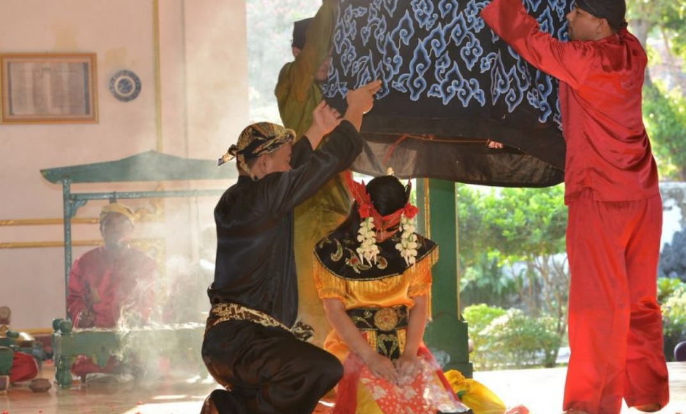

Seni Budaya
 Wayang Golek Gaya Tegalan disebut juga dengan Wayang Cepak. Wayang cepak tidak jauh berbeda dengan wayang
golek Sunda, hanya kepala wayang memiliki bentuk mahkota kepala yang cepak (rata), dan dari bentuk mahkota
kepala itulah wayang ini mendapatkan namanya.
Wayang Golek Gaya Tegalan disebut juga dengan Wayang Cepak. Wayang cepak tidak jauh berbeda dengan wayang
golek Sunda, hanya kepala wayang memiliki bentuk mahkota kepala yang cepak (rata), dan dari bentuk mahkota
kepala itulah wayang ini mendapatkan namanya.

Wayang Kulit gaya Tegal memiliki kekhasan tersendiri dibandingkan dengan gaya lain. Sulukan, dialog atau
antawacana dari pementasan seluruhnya menggunakan bahasa Tegal. Selain itu, gaya Tegalan lebih condong
menguatkan pada konten cerita atau lebih pada bentuk dongengan. Sabet atau permainan anak wayang tidak
begitu banyak disajikan